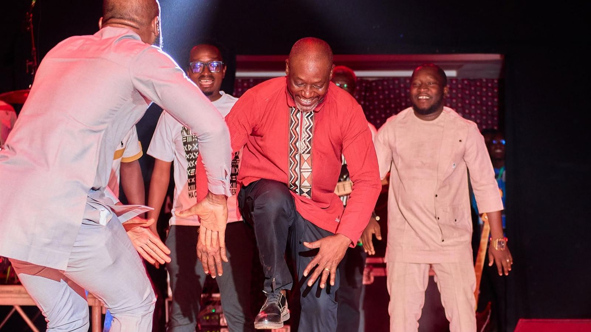
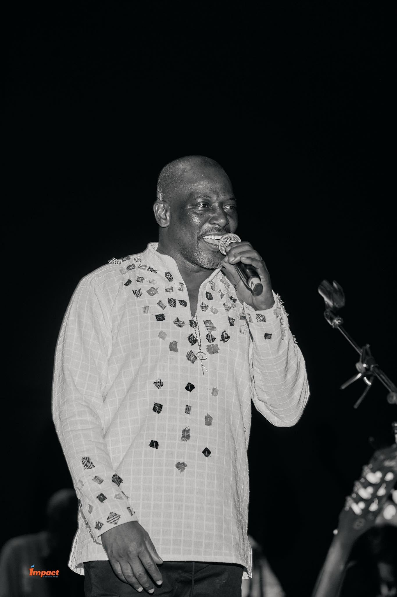

L'artiste
Qui est-il ?
Écoutez.
Avant la voix, il y a la terre.
Avant la guitare, il y a le tambour.
Et avant le nom, il y a Pô.
C'était le vingt-cinq avril mille neuf cent soixante et onze,
au sud du pays, là où le Nahouri veille sur la frontière.
Une mère a donné au monde
un fils de plus parmi dix-sept.
On l'a appelé Bilgho Akaramata Kora.
Le monde, plus pressé, dira Bil Aka Kora.
Il a grandi dans les cours kasséna,
où les chants de cérémonie règlent le temps,
où l'on apprend le rythme
avant d'apprendre les mots.
Un jour, il est monté à Ouagadougou
pour étudier les nombres,
les mathématiques, la physique,
les lois qui tiennent le monde debout.
Mais le rythme ne se résout pas en équation.
En mille neuf cent quatre-vingt-dix-sept,
aux Grands Prix nationaux,
le pays l'a entendu,
et le premier prix de la chanson moderne
lui a dit : ta route est ici.
Son premier album est arrivé en quatre-vingt-dix-huit.
Il l'a appelé Douatou, le faiseur de pluie.
Celui qui fait tomber la pluie
fait lever le mil, et le mil nourrit le village.
Il a réuni ses frères de scène,
le Djongo System,
car le Djongo ne se chante jamais seul.
On raconte que le Djongo était la danse des hommes forts,
celle où les jeunes gens montraient leur vigueur
sous le regard des jeunes filles.
Bil l'a pris dans ses mains
et l'a posé à côté du jazz, du reggae et du blues.
Ils se sont regardés longtemps,
puis ils se sont reconnus,
comme des cousins que l'océan avait séparés.

Puis est venu Ambolou, « ce qui m'est cher ».
Puis Dibayagui, que le public a porté haut.
Deux fois le Kundé d'or l'a couronné,
en deux mille deux, puis en deux mille cinq.
Puis Yaaba, mûri longtemps aux côtés de Ray Lema.
Puis un album dont le titre dit simplement :
partir, et revenir.
Le Ghana et le Mali, le Togo et la Côte d'Ivoire,
la France, la Belgique, l'Allemagne, l'Autriche, le Canada.
Les scènes changent de langue,
mais le tambour parle partout la même.
Celui qui part avec le rythme de son village
ne s'en va jamais tout à fait.
Il revient toujours.

En deux mille huit, il a allumé les Nuits Djongo,
des résidences où la musique instrumentale du Burkina
apprend à se tenir debout,
où les plus jeunes reçoivent ce que les anciens ont transmis.
Car un arbre qui ne donne pas de graines
n'est qu'un souvenir de forêt.
Et quand la musique se tait,
il prête aussi sa voix et son corps
au cinéma et au théâtre.
Bil, fils de Pô.
Bil, voix ample.
Bil, faiseur de pluie.
Bil, porteur du Djongo.
Écoutez.
Le tambour n'a pas fini de parler.